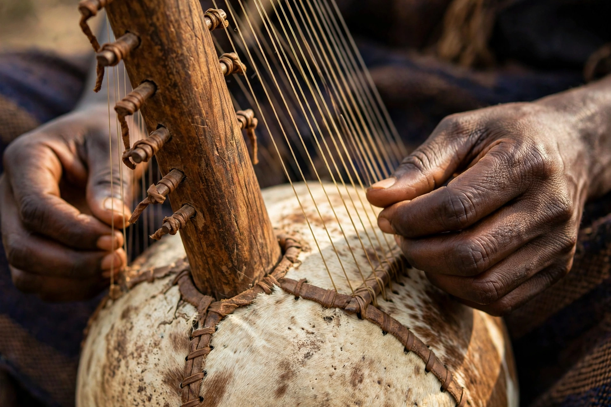

From Wikipedia, the free encyclopedia
| Kora | |
| Classification | String instrument (bridge harp / harp-lute) |
|---|---|
| Origin | West Africa (Mandinka region of the Gambia and Senegal) |
| Strings | 21 (traditionally); some modern koras have more |
| Related | Ngoni, balafon, xalam |
| Noted players | Toumani Diabaté, Ballaké Sissoko, Sona Jobarteh |
The kora is a West African stringed instrument built from a large calabash gourd cut in half and covered with cowhide, with a long hardwood neck. Its 21 strings are plucked with the thumbs and index fingers, producing a cascading, harp-like sound. The kora is the emblematic instrument of the griots (jalolu) of the Mandinka people, used to accompany epic songs, genealogies, and praise poetry.

The strings run from tuning rings on the neck over a notched bridge standing on the hide sound-table. Two hand grips allow the player to hold the instrument upright while the thumbs and forefingers pluck interlocking patterns: a repeating accompaniment (kumbengo) and improvised flourishes (birimintingo). Traditional songs include epics of Sundiata Keita and hymns such as "Kelefa."
The kora is thought to have originated in the Kaabu empire region of present-day Guinea-Bissau and The Gambia, with references in travellers' accounts from the 18th century onward. In the 20th century, players such as the Guinean and Malian virtuosos brought the instrument to world stages; Toumani Diabaté's collaborations and Sona Jobarteh's international career have made the kora one of Africa's best-known instruments.
See also: Mandinka people · Griot · Mali · Toumani Diabaté